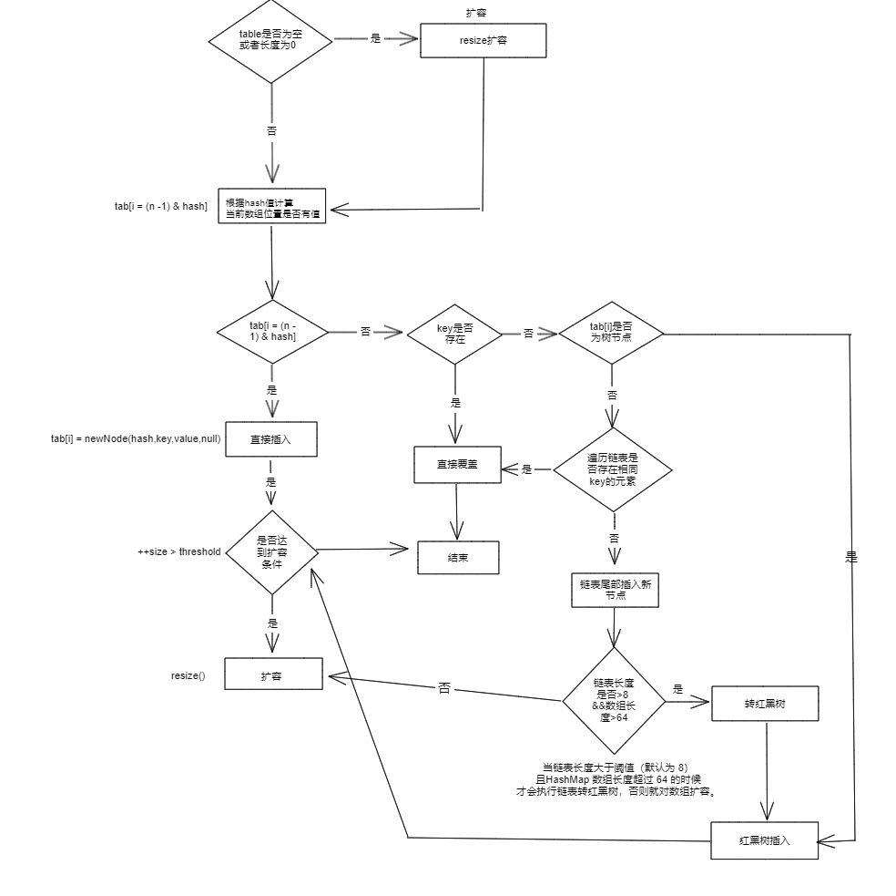

HashMap
HashMap 主要用来存放键值对，它是 基于HashMap的接口实现，常用的Java集合之一，但是 它是非线程安全的
几个需要注意的点:
-
HashMap 可以储存 null 的键，但是只能有一个。value 可以有多个为 null 的值。
-
JDK1.8 之前的 HashMap 是利用 拉链法 来解决哈希冲突的，JDK1.8 之后。 也就是说主体还是数组，因为数组是查询效率最高的，但是如果遇到了哈希冲突的时候，我们就会选择利用链表或者是红黑树来解决。
切换成红黑树进行操作有两个至关重要的条件:
HashMap 的内部成员变量
1
2
3
4
5
6
7
8
9
10
11
12
13
14
15
16
17
18
19
20
21
22
23
24
25
26
27
28 | public class HashMap<K,V> extends AbstractMap<K,V> implements Map<K,V>, Cloneable, Serializable {
// 序列号
private static final long serialVersionUID = 362498820763181265L;
// 默认的初始容量是16
static final int DEFAULT_INITIAL_CAPACITY = 1 << 4;
// 最大容量
static final int MAXIMUM_CAPACITY = 1 << 30;
// 默认的负载因子
static final float DEFAULT_LOAD_FACTOR = 0.75f;
// 当桶(bucket)上的结点数大于等于这个值时会转成红黑树
static final int TREEIFY_THRESHOLD = 8;
// 当桶(bucket)上的结点数小于等于这个值时树转链表
static final int UNTREEIFY_THRESHOLD = 6;
// 桶中结构转化为红黑树对应的table的最小容量
static final int MIN_TREEIFY_CAPACITY = 64;
// 存储元素的数组，总是2的幂次倍
transient Node<k,v>[] table;
// 一个包含了映射中所有键值对的集合视图
transient Set<map.entry<k,v>> entrySet;
// 存放元素的个数，注意这个不等于数组的长度。
transient int size;
// 每次扩容和更改map结构的计数器
transient int modCount;
// 阈值(容量*负载因子) 当实际大小超过阈值时，会进行扩容
int threshold;
// 负载因子
final float loadFactor;
}
|
我们逐个分析一下，首先它是一个继承了 AbstractMap 的类，实现了 Map 接口，同时也实现了 Cloneable 和 Serializable 接口。
-
Serializable ： 实现了序列化接口意味着可以将HashMap对象储存到文件、数据库或者网络传输等操作中。同时也可以通过反序列化的方式将对象重新读取出来。
-
serialVersionUID ： 序列号，用来标识类的版本，如果不显示的声明，编译器会自动生成一个序列号，但是这个序列号是根据类的内部细节生成的，如果类的内部细节发生了变化，那么序列号也会发生变化，这样就会导致反序列化失败。所以我们可以显示的声明一个序列号，这样就可以保证序列号不会发生变化。
-
定义了一些关于容量的参数，默认和最大
- 定义了一些关于树化的参数，比如树化的阈值，链表化的阈值，树化的最小容量
loadFactor: 负载因子表示的数组存放数据的疏密程度，负载因子越大，数组中存放的数据越多，空间利用率高，但是查找效率降低，因为链表或者红黑树的长度会变长，负载因子越小，数组中存放的数据越少，空间利用率低，但是查找效率高，因为链表或者红黑树的长度会变短。
两类节点
Node<K,V>
这个是 HashMap 中的默认存放元素的数组类型.
1
2
3
4
5
6
7
8
9
10
11
12
13
14
15
16
17
18
19
20
21
22
23
24
25
26
27
28
29
30
31
32
33
34
35
36
37
38
39
40 | // 继承自 Map.Entry<K,V>
static class Node<K,V> implements Map.Entry<K,V> {
final int hash;// 哈希值，存放元素到hashmap中时用来与其他元素hash值比较
final K key;//键
V value;//值
// 指向下一个节点,也就对应上了我们用链表来处理哈希冲突的情况
Node<K,V> next;
Node(int hash, K key, V value, Node<K,V> next) {
this.hash = hash;
this.key = key;
this.value = value;
this.next = next;
}
public final K getKey() { return key; }
public final V getValue() { return value; }
public final String toString() { return key + "=" + value; }
// 重写hashCode()方法
public final int hashCode() {
return Objects.hashCode(key) ^ Objects.hashCode(value);
}
// 值得注意的是，这里的setValue()方法返回的是旧值
public final V setValue(V newValue) {
V oldValue = value;
value = newValue;
return oldValue;
}
// 重写 equals() 方法
public final boolean equals(Object o) {
if (o == this)
return true;
if (o instanceof Map.Entry) {
Map.Entry<?,?> e = (Map.Entry<?,?>)o;
if (Objects.equals(key, e.getKey()) &&
Objects.equals(value, e.getValue()))
return true;
}
return false;
}
}
|
TreeNode<K,V> 红黑树的节点
1
2
3
4
5
6
7
8
9
10
11
12
13
14
15
16 | static final class TreeNode<K,V> extends LinkedHashMap.Entry<K,V> {
TreeNode<K,V> parent; // 父
TreeNode<K,V> left; // 左
TreeNode<K,V> right; // 右
TreeNode<K,V> prev; // needed to unlink next upon deletion
boolean red; // 判断颜色
TreeNode(int hash, K key, V val, Node<K,V> next) {
super(hash, key, val, next);
}
// 返回根节点
final TreeNode<K,V> root() {
for (TreeNode<K,V> r = this, p;;) {
if ((p = r.parent) == null)
return r;
r = p;
}
|
HashMap中的几个常见的方法
HashMap 中的构造函数
HashMap中有四种构造函数，分别如下:
1
2
3
4
5
6
7
8
9
10
11
12
13
14
15
16
17
18
19
20
21
22
23
24
25
26
27
28 | // 默认构造函数。
public HashMap() {
this.loadFactor = DEFAULT_LOAD_FACTOR; // all other fields defaulted
}
// 包含另一个“Map”的构造函数
public HashMap(Map<? extends K, ? extends V> m) {
this.loadFactor = DEFAULT_LOAD_FACTOR;
putMapEntries(m, false);//下面会分析到这个方法
}
// 指定“容量大小”的构造函数
public HashMap(int initialCapacity) {
this(initialCapacity, DEFAULT_LOAD_FACTOR);
}
// 指定“容量大小”和“负载因子”的构造函数
public HashMap(int initialCapacity, float loadFactor) {
if (initialCapacity < 0)
throw new IllegalArgumentException("Illegal initial capacity: " + initialCapacity);
if (initialCapacity > MAXIMUM_CAPACITY)
initialCapacity = MAXIMUM_CAPACITY;
if (loadFactor <= 0 || Float.isNaN(loadFactor))
throw new IllegalArgumentException("Illegal load factor: " + loadFactor);
this.loadFactor = loadFactor;
// 初始容量暂时存放到 threshold ，在resize中再赋值给 newCap 进行table初始化
this.threshold = tableSizeFor(initialCapacity);
}
|
其实，我们仔细看这几种构造函数，就能发现他们对应的分别就是:
- 无参构造
-
有参构造
- 利用已有的
Map 对象
- 指定初始容量大小
- 指定初始容量大小和负载因子
HashMap中是没有 Capacity 这个字段的。只会将HashMap扩容到和Capacity 最接近的 \(2^n\) 的容量
putMapEntries 方法
我们在上面已经提及了有一种构造函数就是通过传入已知的一个HashMap来进行构造的，这个时候就会调用putMapEntries方法来进行处理。
1
2
3
4
5
6
7
8
9
10
11
12
13
14
15
16
17
18
19
20
21
22
23
24
25
26
27
28
29
30
31 | final void putMapEntries(Map<? extends K, ? extends V> m, boolean evict) {
int s = m.size();
if (s > 0) {
// 判断table是否已经初始化
if (table == null) { // pre-size
/*
* 未初始化，s为m的实际元素个数，ft=s/loadFactor => s=ft*loadFactor, 跟我们前面提到的
* 阈值=容量*负载因子 是不是很像，是的，ft指的是要添加s个元素所需的最小的容量
*/
float ft = ((float)s / loadFactor) + 1.0F;
int t = ((ft < (float)MAXIMUM_CAPACITY) ?
(int)ft : MAXIMUM_CAPACITY);
/*
* 根据构造函数可知，table未初始化，threshold实际上是存放的初始化容量，如果添加s个元素所
* 需的最小容量大于初始化容量，则将最小容量扩容为最接近的2的幂次方大小作为初始化。
* 注意这里不是初始化阈值
*/
if (t > threshold)
threshold = tableSizeFor(t);
}
// 已初始化，并且m元素个数大于阈值，进行扩容处理
else if (s > threshold)
resize();
// 将m中的所有元素添加至HashMap中，如果table未初始化，putVal中会调用resize初始化或扩容
for (Map.Entry<? extends K, ? extends V> e : m.entrySet()) {
K key = e.getKey();
V value = e.getValue();
putVal(hash(key), key, value, false, evict);
}
}
}
|
总的实现逻辑，其实就是分为两步:
- 是否需要扩容？是否装得下
- 将
Map 中的元素一个一个的放入 HashMap 中
接下来是 HashMap 中的一些常见的方法 :
put 方法get 方法resize 方法hash 方法
因为红黑树比较复杂，具体的实现细节就不展开了。
put 方法

1
2
3
4
5
6
7
8
9
10
11
12
13
14
15
16
17
18
19
20
21
22
23
24
25
26
27
28
29
30
31
32
33
34
35
36
37
38
39
40
41
42
43
44
45
46
47
48
49
50
51
52
53
54
55
56
57
58
59
60
61
62
63
64
65
66
67
68
69
70
71
72
73
74
75
76 | public V put(K key, V value) {
return putVal(hash(key), key, value, false, true);
}
/**
* @param onlyIfAbsent 是否仅在键值不存在的时候进行插入
* @param evict 是否在插入后删除最老的元素
*/
final V putVal(int hash, K key, V value, boolean onlyIfAbsent,
boolean evict) {
Node<K,V>[] tab; Node<K,V> p; int n, i;
// table未初始化或者长度为0，进行扩容
if ((tab = table) == null || (n = tab.length) == 0)
n = (tab = resize()).length;
// (n - 1) & hash 确定元素存放在哪个桶中，桶为空，新生成结点放入桶中(此时，这个结点是放在数组中)
if ((p = tab[i = (n - 1) & hash]) == null)
tab[i] = newNode(hash, key, value, null);
// 桶中已经存在元素（处理hash冲突）
else {
Node<K,V> e; K k;
//快速判断第一个节点table[i]的key是否与插入的key一样，若相同就直接使用插入的值p替换掉旧的值e。
if (p.hash == hash &&
((k = p.key) == key || (key != null && key.equals(k))))
e = p;
// 判断插入的是否是红黑树节点
else if (p instanceof TreeNode)
// 放入树中
e = ((TreeNode<K,V>)p).putTreeVal(this, tab, hash, key, value);
// 不是红黑树节点则说明为链表结点
else {
// 在链表最末插入结点
for (int binCount = 0; ; ++binCount) {
// 到达链表的尾部
if ((e = p.next) == null) {
// 在尾部插入新结点
p.next = newNode(hash, key, value, null);
// 结点数量达到阈值(默认为 8 )，执行 treeifyBin 方法
// 这个方法会根据 HashMap 数组来决定是否转换为红黑树。
// 只有当数组长度大于或者等于 64 的情况下，才会执行转换红黑树操作，以减少搜索时间。否则，就是只是对数组扩容。
if (binCount >= TREEIFY_THRESHOLD - 1) // -1 for 1st
treeifyBin(tab, hash);
// 跳出循环
break;
}
// 判断链表中结点的key值与插入的元素的key值是否相等
if (e.hash == hash &&
((k = e.key) == key || (key != null && key.equals(k))))
// 相等，跳出循环
break;
// 用于遍历桶中的链表，与前面的e = p.next组合，可以遍历链表
p = e;
}
}
// 表示在桶中找到key值、hash值与插入元素相等的结点
if (e != null) {
// 记录e的value
V oldValue = e.value;
// onlyIfAbsent为false或者旧值为null
if (!onlyIfAbsent || oldValue == null)
//用新值替换旧值
e.value = value;
// 访问后回调
afterNodeAccess(e);
// 返回旧值
return oldValue;
}
}
// 结构性修改
++modCount;
// 实际大小大于阈值则扩容
if (++size > threshold)
resize();
// 插入后回调
afterNodeInsertion(evict);
return null;
}
|
我们首先看，put 方法其实是由 put+putVal 方法组成的。具体的细节我们看 putVal 方法。
其实大体的逻辑思路就是 :
因为是 HashMap 我们在对于 key 相同的键值存在的时候的处理办法选择的是直接覆盖
-
Step 1: 查看HashMap是否初始化，如果没有初始化，就进行初始化。也就是直接resize进行扩容
-
Step 2: 确定元素存放在哪个桶里 index = (n - 1) & hash
- 桶为空，则说明可以直接放入新的节点
- 跳到Step3 进行判断
-
Step3 : 因为桶中是有元素的，我们需要判断是否和key相同
- 如果相同就直接覆盖
- 如果不相同的话：开始处理哈希冲突
- 如果是红黑树节点，就直接放入红黑树中即可
e = ((TreeNode<K,V>)p).putTreeVal(this, tab, hash, key, value);
- 如果不是的话，我们就直接在链表的尾部进行插入新的节点，并且维护是否需要扩容/红黑树化的操作。
-
Step4 : 覆盖旧值，我们上述的操作都是找到了对应的节点，然后进行了覆盖操作，最后返回旧值。
- Step5 : 结构性修改，如果实际大小大于阈值，则进行扩容操作。
Java的 LinkedHashMap 方法是用作LRU缓存的
get 方法
接下来分析 get 方法
1
2
3
4
5
6
7
8
9
10
11
12
13
14
15
16
17
18
19
20
21
22
23
24
25
26
27
28 | public V get(Object key) {
Node<K,V> e;
return (e = getNode(hash(key), key)) == null ? null : e.value;
}
final Node<K,V> getNode(int hash, Object key) {
Node<K,V>[] tab; Node<K,V> first, e; int n; K k;
if ((tab = table) != null && (n = tab.length) > 0 &&
(first = tab[(n - 1) & hash]) != null) {
// 数组元素相等
if (first.hash == hash && // always check first node
((k = first.key) == key || (key != null && key.equals(k))))
return first;
// 桶中不止一个节点
if ((e = first.next) != null) {
// 在树中get
if (first instanceof TreeNode)
return ((TreeNode<K,V>)first).getTreeNode(hash, key);
// 在链表中get
do {
if (e.hash == hash &&
((k = e.key) == key || (key != null && key.equals(k))))
return e;
} while ((e = e.next) != null);
}
}
return null;
}
|
resize 方法
1
2
3
4
5
6
7
8
9
10
11
12
13
14
15
16
17
18
19
20
21
22
23
24
25
26
27
28
29
30
31
32
33
34
35
36
37
38
39
40
41
42
43
44
45
46
47
48
49
50
51
52
53
54
55
56
57
58
59
60
61
62
63
64
65
66
67
68
69
70
71
72
73
74
75
76
77
78
79
80
81
82
83
84
85 | final Node<K,V>[] resize() {
Node<K,V>[] oldTab = table;
int oldCap = (oldTab == null) ? 0 : oldTab.length;
int oldThr = threshold;
int newCap, newThr = 0;
if (oldCap > 0) {
// 超过最大值就不再扩充了，就只好随你碰撞去吧
if (oldCap >= MAXIMUM_CAPACITY) {
threshold = Integer.MAX_VALUE;
return oldTab;
}
// 没超过最大值，就扩充为原来的2倍
else if ((newCap = oldCap << 1) < MAXIMUM_CAPACITY && oldCap >= DEFAULT_INITIAL_CAPACITY)
newThr = oldThr << 1; // double threshold
}
else if (oldThr > 0) // initial capacity was placed in threshold
// 创建对象时初始化容量大小放在threshold中，此时只需要将其作为新的数组容量
newCap = oldThr;
else {
// signifies using defaults 无参构造函数创建的对象在这里计算容量和阈值
newCap = DEFAULT_INITIAL_CAPACITY;
newThr = (int)(DEFAULT_LOAD_FACTOR * DEFAULT_INITIAL_CAPACITY);
}
if (newThr == 0) {
// 创建时指定了初始化容量或者负载因子，在这里进行阈值初始化，
// 或者扩容前的旧容量小于16，在这里计算新的resize上限
float ft = (float)newCap * loadFactor;
newThr = (newCap < MAXIMUM_CAPACITY && ft < (float)MAXIMUM_CAPACITY ? (int)ft : Integer.MAX_VALUE);
}
threshold = newThr;
@SuppressWarnings({"rawtypes","unchecked"})
Node<K,V>[] newTab = (Node<K,V>[])new Node[newCap];
table = newTab;
if (oldTab != null) {
// 把每个bucket都移动到新的buckets中
for (int j = 0; j < oldCap; ++j) {
Node<K,V> e;
if ((e = oldTab[j]) != null) {
oldTab[j] = null;
if (e.next == null)
// 只有一个节点，直接计算元素新的位置即可
newTab[e.hash & (newCap - 1)] = e;
else if (e instanceof TreeNode)
// 将红黑树拆分成2棵子树，如果子树节点数小于等于 UNTREEIFY_THRESHOLD（默认为 6），则将子树转换为链表。
// 如果子树节点数大于 UNTREEIFY_THRESHOLD，则保持子树的树结构。
((TreeNode<K,V>)e).split(this, newTab, j, oldCap);
else {
Node<K,V> loHead = null, loTail = null;
Node<K,V> hiHead = null, hiTail = null;
Node<K,V> next;
do {
next = e.next;
// 原索引
if ((e.hash & oldCap) == 0) {
if (loTail == null)
loHead = e;
else
loTail.next = e;
loTail = e;
}
// 原索引+oldCap
else {
if (hiTail == null)
hiHead = e;
else
hiTail.next = e;
hiTail = e;
}
} while ((e = next) != null);
// 原索引放到bucket里
if (loTail != null) {
loTail.next = null;
newTab[j] = loHead;
}
// 原索引+oldCap放到bucket里
if (hiTail != null) {
hiTail.next = null;
newTab[j + oldCap] = hiHead;
}
}
}
}
}
return newTab;
}
|
Hash 方法
hashMap 中的Hash方法并没有直接的使用 hashcode,而是利用了高低位异或的方式来进行的。
| static final int hash(Object key) {
int h;
// key.hashCode()：返回散列值也就是hashcode
// ^：按位异或
// >>>:无符号右移，忽略符号位，空位都以0补齐
return (key == null) ? 0 : (h = key.hashCode()) ^ (h >>> 16);
}
|
从而提高了低位的随机性，使得hash&(n-1)计算出来的索引更加均匀分布,减少了哈希冲突的概率。